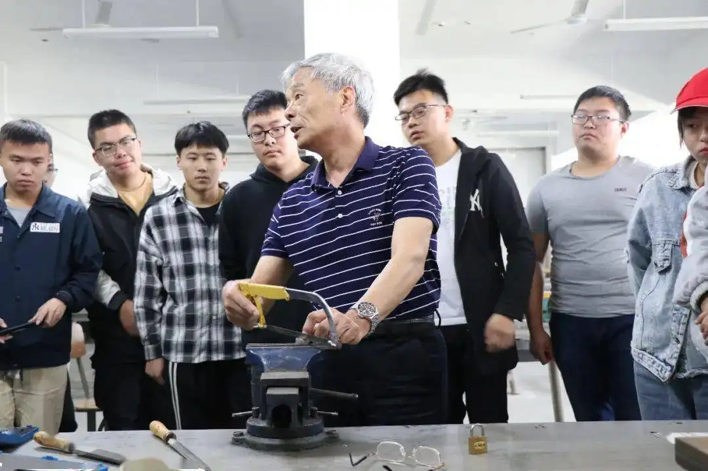

-
人物介绍：
顾秋亮，男，江苏无锡人，生于1955年，中国船舶重工集团公司第七O二研究所水下工程研究开发部职工，蛟龙号载人潜水器首席装配钳工技师。 “五一”期间央视新闻频道播出节目《大国工匠》，节目中，中国船舶重工集团公司第七〇二研究所(以下简称七〇二所)“两丝”钳工顾秋亮的那双指纹已不清晰的手，给亿万观众留下了深刻印象。顾秋亮是土生土长的无锡人，在钳工岗位上一干就是43年，能把中国载人潜水器的组装做到精密度达“丝”级。3月，经顾秋亮双手组装的“蛟龙号”刚离开无锡安家青岛，年底，他也将到退休年龄。但新的挑战来了，七〇二所要组装中国首个自主设计制造的4500米载人潜水器，顾秋亮还将在自己热爱的钳工岗位上坚守下去 2019年4月，荣获“最美职工”。
所得荣誉
2004年，为了确保蛟龙号载人潜水器的顺利安装，七O二所抽调技术过硬的技术骨干参加该项目的总装工作，顾秋亮为其中之一。该项目是当前世界潜深最深的载人潜水器。 -
一面是相伴数十载的亲人，一面是伴随其成长成熟的蛟龙号的“成人礼”，跟随海试队南征北战多年，从未因工作上的困难皱过眉头的顾秋亮犹豫了，这位皮肤黝黑的“老战士”眉头锁成了一团。
长年扑在工作上，顾秋亮对老伴充满了内疚之情，他万分焦急，放心不下老伴的病情，恨不得马上飞到她身边陪护左右。可蛟龙号，就如同自己的孩子般，顾秋亮对它也有着深厚的情感。“一路走来，我精心呵护着它，伴随它成长，为它整理行装、包扎伤口、精心手术、穿上新装，看它踏上征程，我希望能够亲自护送它完成其‘成人’前的最后一次考验。”经过彻夜未眠的剧烈心理斗争，他说服自己出征“前线”。 组织上的宽慰和帮助更是让他坚定了自己的决心。这位倔强的汉子将对亲人的牵挂深深埋藏在心底，全身心投入到海试工作中。他用自己的实际行动诠释了新时代一名在平凡岗位上创造不平凡业绩的“英雄”风采。怀揣崇高的使命感和荣誉感，如今他又肩起了新的挑战——组装4500米载人潜水器。已近花甲的顾秋亮仍坚守在科研生产第一线，为载人深潜事业不断书写我国深蓝乃至世界深蓝的奇迹默默奉献…… -
顾秋亮同志从1972年起在中国船舶重工集团公司第七O二研究所工作，在钳工安装及科研试验工作方面已经工作了四十多年，先后参加和主持过数十项机械加工和大型工程项目的安装调试工作，是一名安装经验丰富、技术水平过硬的钳工技师。 顾秋亮同志对工作兢兢业业，刻苦钻研，不断提高技术水平和能力，有较强的创新和解决技术难题的技能，出色完成了各项高科技高难度高水平的工程安装调试任务。 顾秋亮同志为我国大型试验基地各大型实验室重大试验设施的建设、调试和维护正常运行等提出了行之有效的解决方案，比如在400米长的亚洲第一拖曳水池轨道的高精度安装调试、大型低噪声循环水槽的建设等工作中，解决了大型模型安装、测试仪器调整等关键技术，为七O二所有关实验室的正常运行做出了积极的贡献。 2004年，为了确保蛟龙号载人潜水器的顺利安装，七O二所抽调技术过硬的技术骨干参加该项目的总装工作，顾秋亮为其中之一。该项目是当前世界潜深最深的载人潜水器，其12大分系统工程复杂，研制难度相当大。在潜水器总装及调试过程中，顾秋亮同志作为潜水器装配保障组组长，工作认真负责，吃苦耐劳，带领全组成员积极配合设计人员，对每个细节进行精细操作，任劳任怨，以严肃的科学态度和踏实的工作作风，凭借扎实的技术技能和实践经验，主动勇挑重担，解决了一个又一个难题，保证了潜水器顺利按时完成总装联调，获得设计人员和同事的一致好评。 蛟龙号载人潜水器是可以下潜7000米深海进行资源勘查、深海观察作业和深海生物基因研究等的高科技装备。7000米深海的压力达到700个大气压，蛟龙号所有的设备都要承受如此之大的深海压力，只有保证好密封性能才能确保三名下潜人员的安全。为此，潜水器的结构件及设备的安装都有非常严格的要求，所有结构件、零部件的安装位置必须到位，强度必须保证。如潜水器舯部两侧的测深侧扫声纳，是可以进行深海海底地形精细观察的高精尖装备，对于安装的精度要求非常高，顾秋亮同志根据设计安装图纸设计了专用工装，并绘制安装工艺图，成功完成该项设备的安装，满足了安装精度要求。又如潜水器艉部X型布置的稳定翼，是由内部充填高强度低密度的新型浮力材料，外部包裹高强度新型耐海水复合材料的复合夹芯结构，由于结构复杂，外部流线型要求高，在加工时难满足精度要求。他采取了行之有效的措施，既达到了精度要求，又保证了根部具有足够的强度，圆满完成了稳定翼的安装。 2009年至2012年，顾秋亮作为蛟龙号海上试验技术保障骨干，全程参与了蛟龙号载人潜水器1000米、3000米、5000米和7000米四个阶段的海上试验。参加海上试验时，顾秋亮已是五十多岁，但他克服了严重的晕船反应和海上艰苦的工作生活条件等诸多困难，安排好家中生病的妻子，义无反顾地投入到每年近100天的海试中。他带领装配保障组不仅完成了蛟龙号的日常维护保养，还和科技人员一道攻关，解决了海上试验中遇到的技术难题，如压载铁的安装、水下灯光的调整、布放回收接口的设置等，并将自己的技术和心得体会毫无保留地传授给国家深海基地的技术人员，为海试的顺利进行和蛟龙号投入正规化的业务运行立下了汗马功劳。 顾秋亮说：“在海上工作生活确实很苦很累，但我感到很兴奋、很自豪。不管是晚上加班到半夜还是早上五点半起床保养潜器，不管日晒还是雨淋，我感到很光荣，能为海试出一份力，我很骄傲，因为在祖国的深潜记录中有我的汗水，光荣！” 怀揣崇高的使命感和荣誉感，他又肩起了新的挑战——组装4500米载人潜水器。已近花甲的顾秋亮仍坚守在科研生产第一线，为载人深潜事业不断书写我国深蓝乃至世界深蓝的奇迹默默奉献…
-